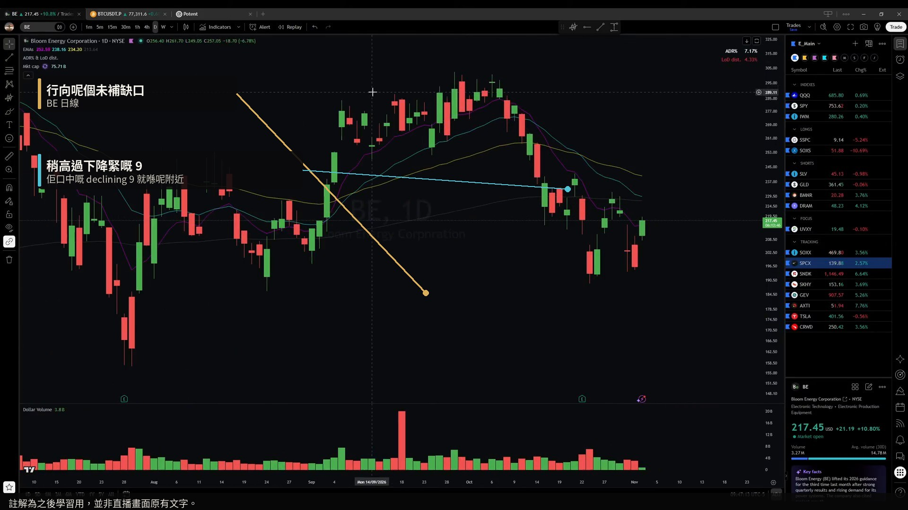

概要
BE 正行向未補缺口，稍高過下降 9
25:23 畫面係 BE（Bloom Energy）日線。Whisper 把代碼聽成 BG，YouTube 自動字幕則作 “The easiest now heading towards this unfilled gap”。本頁按畫面更正為 BE。佢話而家行向呢個未補缺口，並且稍高過下降緊嘅 9 EMA。呢句好短，只係位置描述。
圖一 · 主圖
BE 日線：未補缺口，稍高過下降 9
直播 25:23

原話
BE is now heading towards this unfilled gap, and slightly above the 9 EMA, the declining 9.
BE 而家行向呢個未補缺口，並且稍為高過 9 EMA，即係呢條下降緊嘅 9。
點樣讀
日線見到前方有一個未補缺口，價格喺一條下降均線稍上方。佢只係指出呢兩個位置，冇再講一定會補缺口，或者而家就要淡。
圖例冇印 9 呢個周期，本頁只標口中嘅下降 9 就喺呢附近。
附註
注意事項
- 畫面代碼係 BE（Bloom Energy Corporation）。Whisper 聽成 BG，YouTube 自動字幕聽成 The easiest。本頁按畫面更正。
- 25:50 前後曾經切過 BE 1 小時，但呢句對白對應嘅係日線。
- 圖例多數只有顏色同數值，冇印均線周期。本頁唔會把某條彩線寫死成 9 EMA。
- 畫面睇唔到成交價、倉位大細或者損益，所以唔寫死呢啲數字。